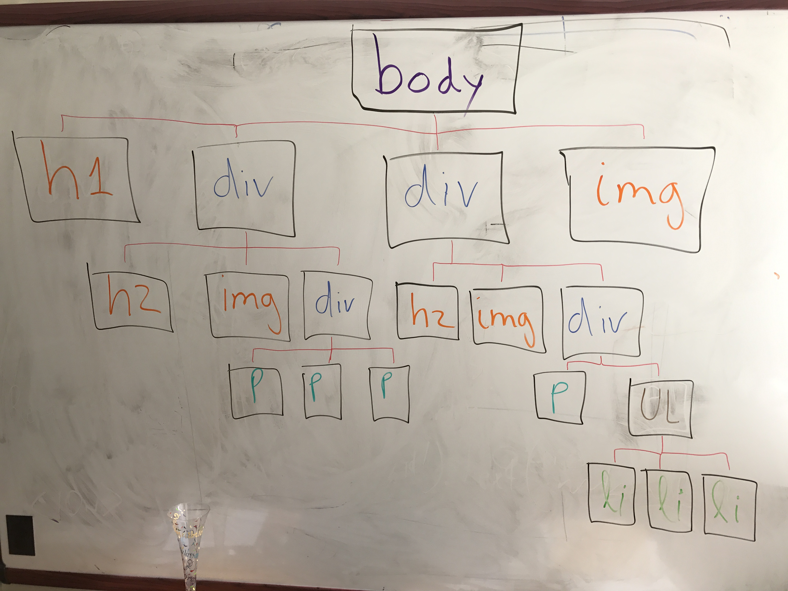

jQuery Filters
An intro (also h3 header)
We can use jQuery filters to target specific content on a page.
We can then manipulate, change or gather that content.
Targeting Tags
We can target all tags such as p tag, div tag, strong tag, and h1, h2 tags, etc.
Returning Classes and IDs
We can target tags that have specific classes or IDs.
$("[class]")will retrieve every class on the page. Not too useful.$("[id]")will retrieve every ID on the page. Also pretty worthless.$("p[class]")or$("p[id]")adds a tag to narrow down to classes or IDs with a specific tag.$("p[class=nameOfClassHere]")targets a tag with a specific class. Works with ID too.$("p[id^=partialNameOfIdHere]")targets an ID that begins with certain letters. The ^ denotes "starts with."
This sentence is about a cute black kitten.
This sentence is about a cute black puppy.
This sentence is about a cute white kitten.
This sentence is about a cute white puppy.
This sentence is about the while-away bird.
Other Filters
The things we used earlier, like :first and :last, are known as filters. We use filters to zero in on specific elements in the tags.
$("#classes-ids li:gt(1)")will retrieve any list items under the ID "classes-ids" that has an index position greater than 1.$("#classes-ids li:not(li:eq(2))")will get every item under the ID "classes-ids" that is not equal to index position 2.
Generational Ties
We can target specific ancestors, descendents and siblings. Checkout this illustration:
$("#black-van ~ p")will retrieve every sibling p tag after a specified element (in this case the black-van ID).$("div.lesson > h3")will retrieve every h3 on the page that is a child of a div class "lesson".$("div#main-container > h3")will retrieve every h3 on the page that is a child of a div with ID "main-container".
This sentence is about a fast black car.
This sentence is about a massive black van.
This sentence is about a fast white car.
This sentence is about a massive white van.
This h3 tag is outside the div that has the class "lesson".
Many More Selectors
You'll find many more selectors here to target just about any specific element on a web page.